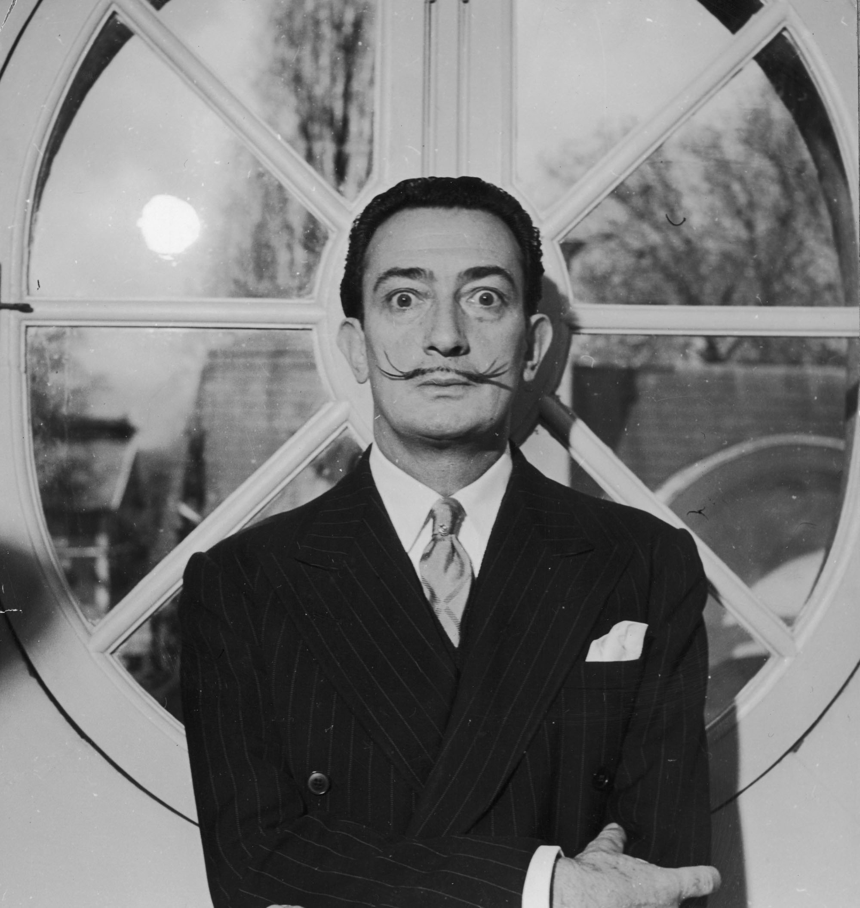

Surrealism is destructive, but it destroys only what it considers to be shackles limiting our vision.
Salvador Dali

Surrealism is destructive, but it destroys only what it considers to be shackles limiting our vision.
Salvador Dali
Salvador Domingo Felipe Jacinto Dali i Domenech, Marques de Dali de Pubol (11 May 1904 – 23 January 1989), known professionally as Salvador Dali, was a prominent Spanish surrealist painter born in Figueres, Catalonia, Spain.
Dali was a skilled draftsman, best known for the striking and bizarre images in his surrealist work. His painterly skills are often attributed to the influence of Renaissance masters. His best-known work, The Persistence of Memory, was completed in August 1931. Dali's expansive artistic repertoire included film, sculpture, and photography, in collaboration with a range of artists in a variety of media.
Dali attributed his "love of everything that is gilded and excessive, my passion for luxury and my love of oriental clothes" to an "Arab lineage", claiming that his ancestors were descended from the Moors.
Dali was highly imaginative, and also enjoyed indulging in unusual and grandiose behavior. His eccentric manner and attention-grabbing public actions sometimes drew more attention than his artwork, to the dismay of those who held his work in high esteem, and to the irritation of his critics.